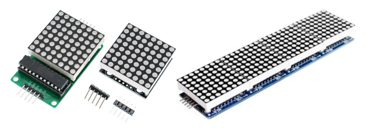
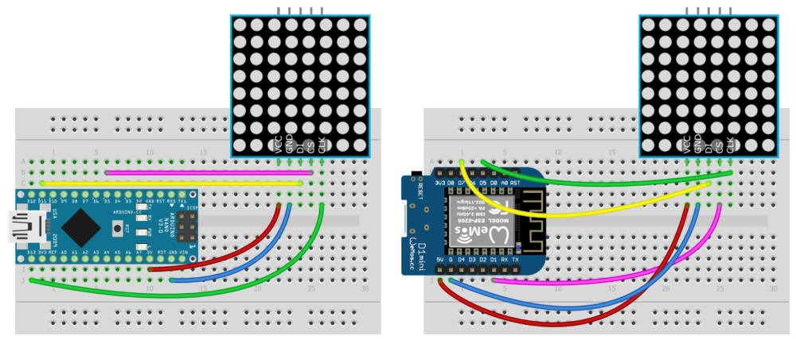
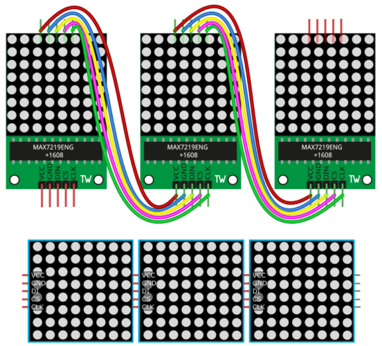
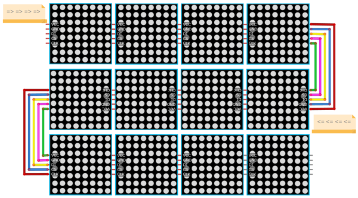

Arduino и матрица MAX7219
Содержание
Описание
Подключение
Библиотеки
Примеры
Домашнее задание
MAX7219 – микросхема для управления 7-сегментными индикаторами и матрицами 8х8. Благодаря встроенной динамической индикации и настройке тока этот чип в десятки раз упрощает работу и с теми, и с другими. На китайском рынке есть несколько вариантов исполнения матричных модулей на базе этой микросхемы:

В наборе GyverKIT можно встретить как первый, так и второй вариант слева. Подключаются и управляются они абсолютно одинаково, но первый вариант можно разобрать и отдельно поэкспериментировать с матрицей и микросхемой.
Модуль подключается к питанию (VCC, GND), остальные пины – управляющие, могут подключаться:
Рассмотрим подключение по SPI к Arduino Nano и Wemos mini. CS на пин 5 (D1 у Wemos)

Модули обоих типов можно объединять в дисплеи, подключая вход (сторона с пином DI) каждой следующей матрицы к выходу (сторона с пином DO) предыдущей, с синими модулями это сделать проще:

Библиотека GyverMAX7219 позволяет сделать дисплей любого размера, подключая модули зигзагом:

В примерах на этом сайте мы будем использовать GyverMAX7219 как гораздо более лёгкую и быструю библиотеку. Библиотека идёт в архиве к набору GyverKIT, а свежую версию всегда можно установить/обновить из встроенного менеджера библиотек Arduino по названию GyverMAX7219. Краткая документация находится по ссылкам выше, базовые примеры есть в самой библиотеке.
Объявление матрицы выглядит так:
//MAX7219 < W, H, CS > mtrx; // подключение к аппаратному SPI
// пример: UNO / Nano (CLK - D13, DI - D11, CS - любой пин)
//MAX7219 < W, H, CS, DATA, CLK > mtrx; // подключение к любым пинам
// W и H - количество МАТРИЦ по горизонтали и вертикали
// CS, DATA, CLK - номера пинов
Для начала работы нужно вызвать
begin()
. Опционально можно настроить яркость через
setBright(0.. 15) и повернуть матрицу
setRotation(0.. 3)
. На матрицу можно выводить:
void dot(int x, int y, uint8_t fill = 1); // точка, fill - GFX_CLEAR/GFX_FILL/GFX_STROKE
void fastLineH(int y, int x0, int x1, uint8_t fill = 1); // вертикальная линия, fill - GFX_CLEAR/GFX_FILL/GFX_STROKE
void fastLineV(int x, int y0, int y1, uint8_t fill = 1); // горизонтальная линия, fill - GFX_CLEAR/GFX_FILL/GFX_STROKE
void line(int x0, int y0, int x1, int y1, uint8_t fill = 1); // линия, fill - GFX_CLEAR/GFX_FILL/GFX_STROKE
void rect(int x0, int y0, int x1, int y1, uint8_t fill = 1); // прямоугольник, fill - GFX_CLEAR/GFX_FILL/GFX_STROKE
void roundRect(int x0, int y0, int x1, int y1, uint8_t fill = 1); // скруглённый прямоугольник, fill - GFX_CLEAR/GFX_FILL/GFX_STROKE
void circle(int x, int y, int radius, uint8_t fill = 1); // окружность, fill - GFX_CLEAR/GFX_FILL/GFX_STROKE
void bezier(uint8_t* arr, uint8_t size, uint8_t dense, uint8_t fill = 1); // кривая Безье
void bezier16(int* arr, uint8_t size, uint8_t dense, uint8_t fill = 1); // кривая Безье 16 бит. fill - GFX_CLEAR/GFX_FILL/GFX_STROKE
void drawBitmap(int x, int y, const uint8_t *frame, int width, int height, uint8_t invert = 0, byte mode = 0); // битмап
void setCursor(int x, int y); // установить курсор
void setScale(uint8_t scale); // масштаб текста
void invertText(bool inv); // инвертировать текст
void autoPrintln(bool mode); // автоматический перенос строки
void textDisplayMode(bool mode); // режим вывода текста GFX_ADD/GFX_REPLACE
Чтобы матрица обновилась – нужно вызвать
update()
.
Инициализируем библиотеку для работы с одной матрицей, подключенной по SPI, пин CS на D5 (D1 на Wemos)
#include <GyverMAX7219.h>
MAX7219 < 1, 1, 5 > mtrx; // одна матрица (1х1), пин CS на D5
Инициализация дисплея с размером 4х2 матрицы (32×16 точек) будет выглядеть так:
MAX7219 < 4, 2, 5 > mtrx;
Базовый пример, рисует линии и круг
Пример с 1 матрицей
Выводим кучу emoji картинок
Демо эффекты, дисплей 32х16 точек
Демонстрация работы примера с дисплеем:
Видеоплеер
00:31
Эти примеры есть в библиотеке, их можно открыть из Arduino IDE/Файл/Примеры/GyverMAX7219
Связанные уроки
Полезный пример?
17
Arduino и адресная светодиодная лента
ПОХОЖИЕ ПРИМЕРЫ